ASC_TLMTSYS 실시간 텔레메트리
데이터 분석창 세션 로그 및 리포트
주행 정보의 실시간 트래킹 결과와 세분화된 물리 파라미터 및 인공지능이 도출한 차량 셋업 및 드라이버 교정 분석 결과물입니다.
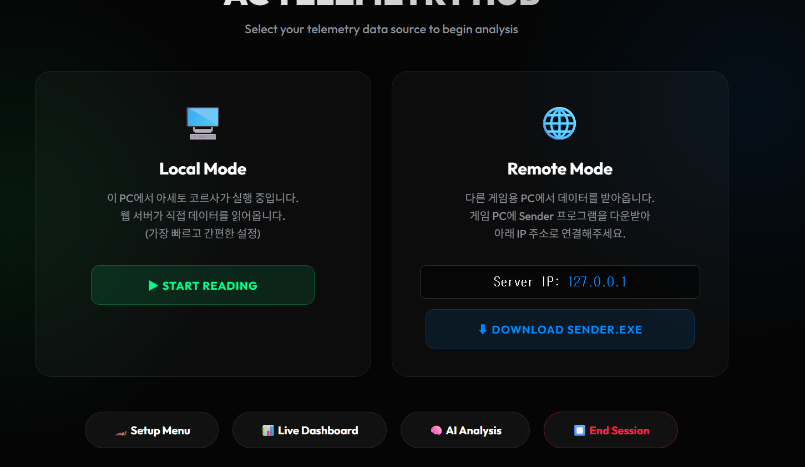
프로그램의 첫 화면
텔레메트리 시스템 기동 시 데이터 프레임워크 초기화 후 소켓 포트 개방 및 패킷 수신 대기 상태를 나타내는 진입점 화면입니다.
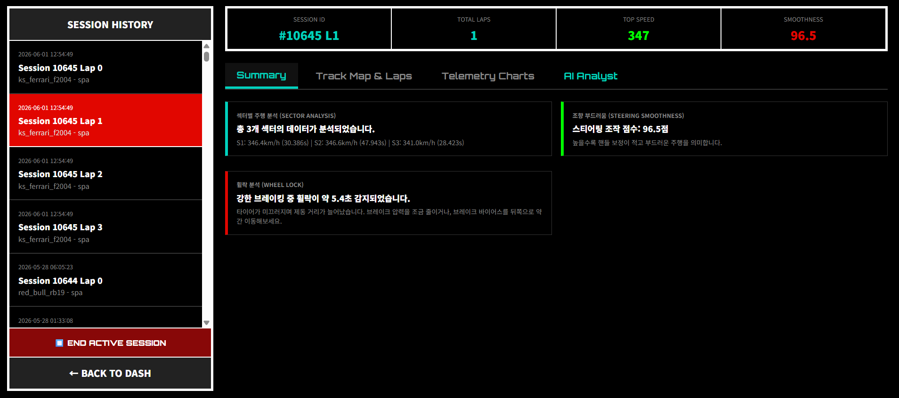
분석창의 Summary 화면
해당 세션 주행의 전체적인 정보를 요약하여 제공합니다. 총 주행 거리, 최고 속도, 랩 타임 분포 및 전반적인 통계를 한눈에 식별할 수 있습니다.
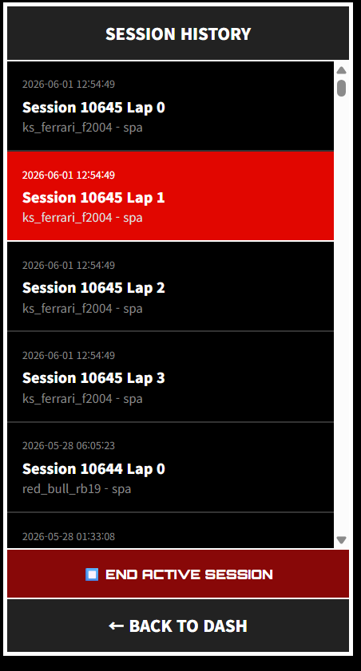
세션 및 랩별 정보 선택
타임스탬프와 주행 트랙별로 분류 저장된 전체 데이터 로그에서 원하는 세션과 특정 랩(Lap)을 선택하여 즉시 분석 타겟으로 불러오는 내비게이터 툴입니다.
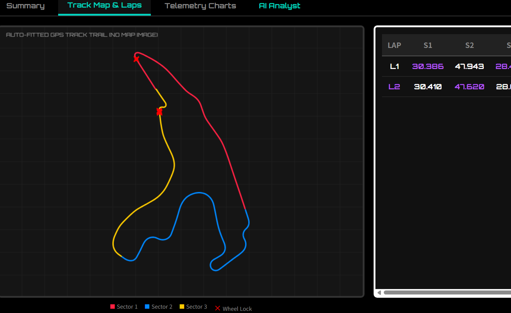
주행 라인, 섹터 및 휠락포인트 정보
드라이버가 주행한 궤적과 구간별 섹터 타임을 표시합니다. 감속 과정에서 브레이크 입력 초과로 인해 바퀴가 완전히 고정된 채 미끄러진 휠락(Wheel Lock) 발생 구간을 붉은 점으로 표시하여 라인 교정을 지원합니다.
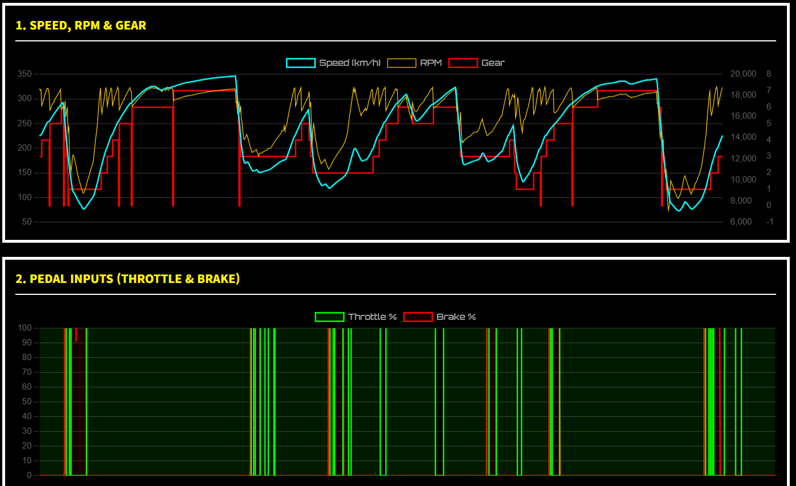
실시간 저장 정보 열람 1 (RPM, GEAR, Throttle)
시간 경과 및 주행 거리에 따른 RPM의 순간 도달 속도, 선택 기어 단수, 가속 페달 전개율(Throttle %) 등 AI 알고리즘의 분석 원천이 되는 물리 시계열 로우 데이터를 구조적 표로 확인합니다.
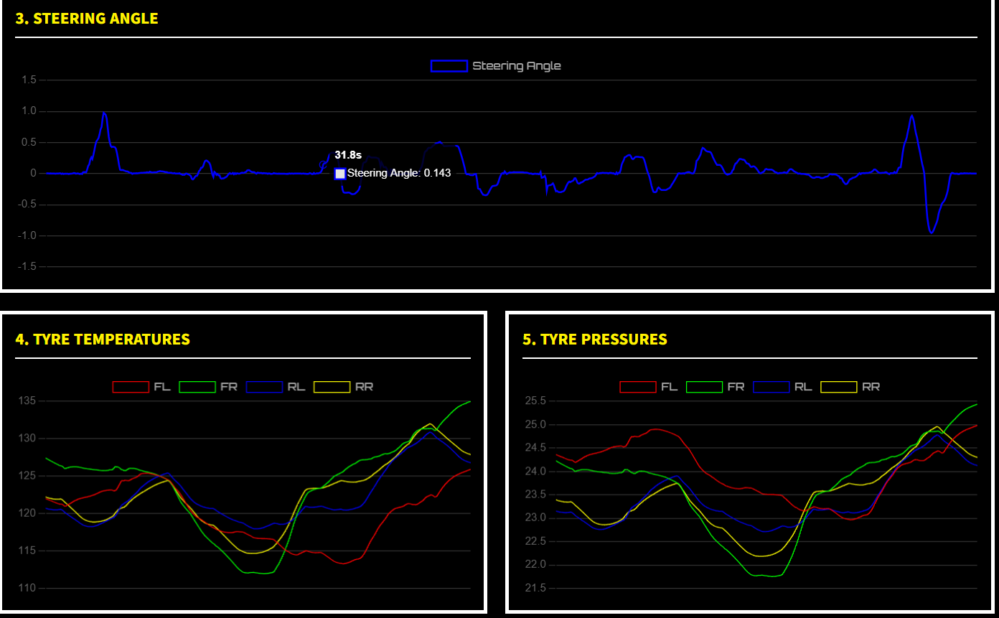
실시간 저장 정보 열람 2 (물리량 상세)
차량 서스펜션 로드 센서 데이터, 4륜 타이어의 Core/Surface 온도 분포, 차량에 인가되는 순간 종/횡 G-force 등 차량의 거동 해석을 위한 핵심 연산 데이터 테이블입니다.
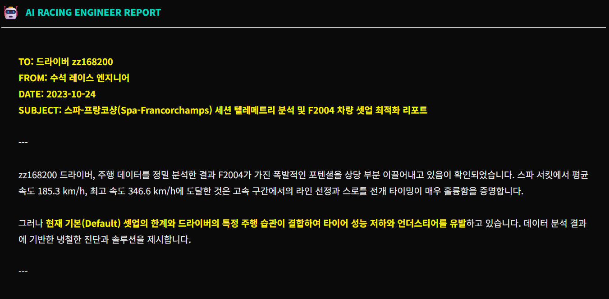
AI 분석 결과 1 (종합 분석)
주행 중 축적된 데이터를 정규화하여 현 시점 드라이버의 제동 효율, 코너 진입 속도 마진, 차량 밸런스 불안 요소를 다각도로 진단하여 보여주는 인텔리전트 AI 피드백 1단계 리포트입니다.
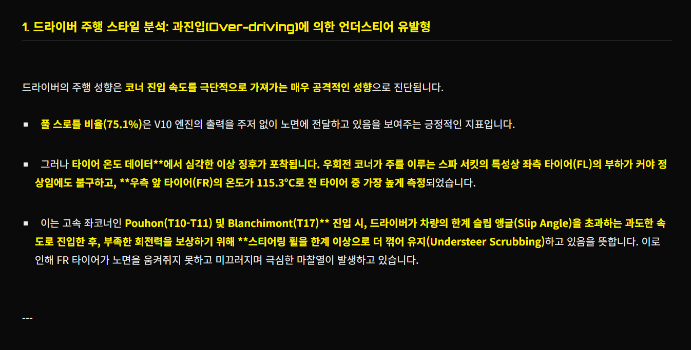
AI 분석 결과 2 (코너 거동 피드백)
세밀한 차속 변화와 코너 곡률 반경 정보를 비교 분석하여 가속 페달을 조기 전개할 수 있는 트랙션 최적 구간을 제시하고 주행 성능 향상을 지원합니다.
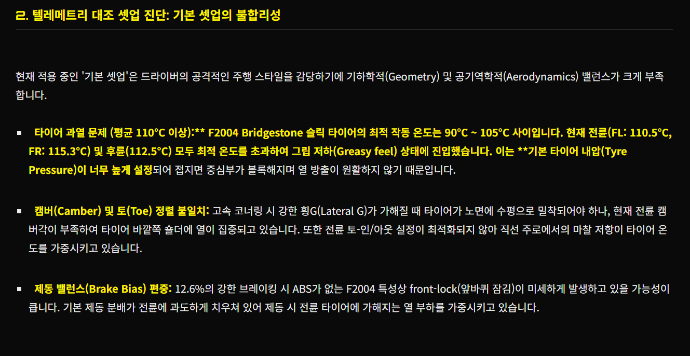
AI 분석 결과 3 (차량 역학 피드백)
과도한 코너링 슬립각(Slip Angle) 및 롤링 레이트를 감지하여 오버스티어/언더스티어가 유발된 주행 기록을 분류하고 오차 범위를 리포트합니다.
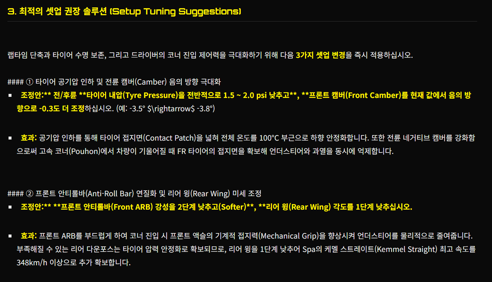
AI 분석 결과 4 (제동 패턴 분석)
브레이크 제어 압력 파형(Brake Pressure Profile)을 템플릿 주행 데이터와 비교하여 제동 포인트 돌입 지연율 및 브레이크 릴리즈(Trail Braking) 조절 완성도를 연산합니다.
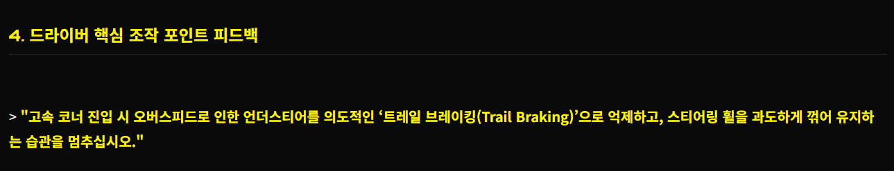
AI 분석 결과 5 (주행 종합 개선 리포트)
차량의 하체 기하학적 셋업 변경(캠버, 토인 등) 가이드와 드라이버의 악셀 오프 윈도우 조절 타이밍 가이드를 합성한 최종 셋업 솔루션을 보여줍니다.

정보 분석창의 전체적 모습
비동기 소켓 리시버, 주행 맵 트래커, 시계열 물리 데이터 그리드, AI 실시간 가이드보드가 한곳에 유기적으로 통합 정렬된 분석 시스템 메인 윈도우입니다.